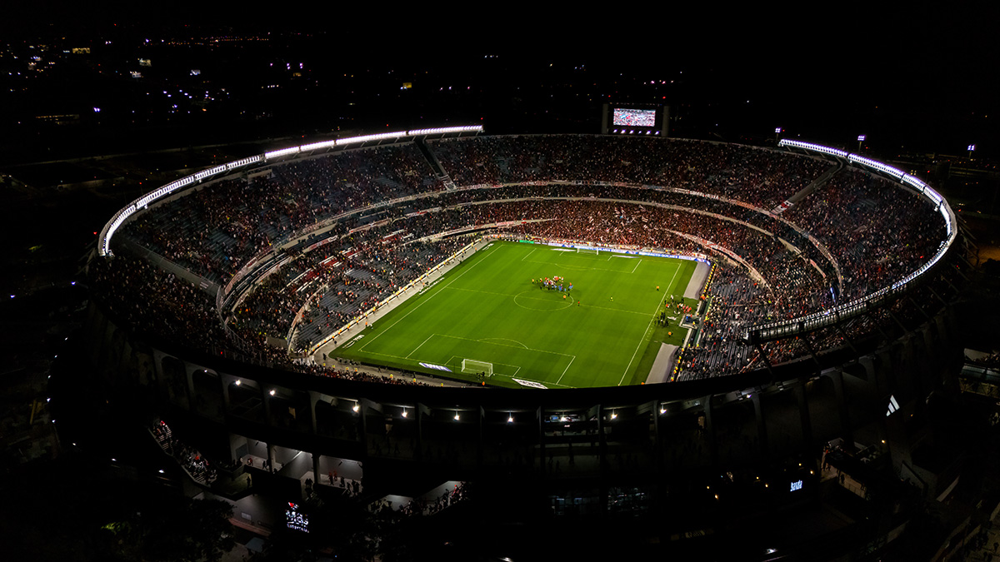
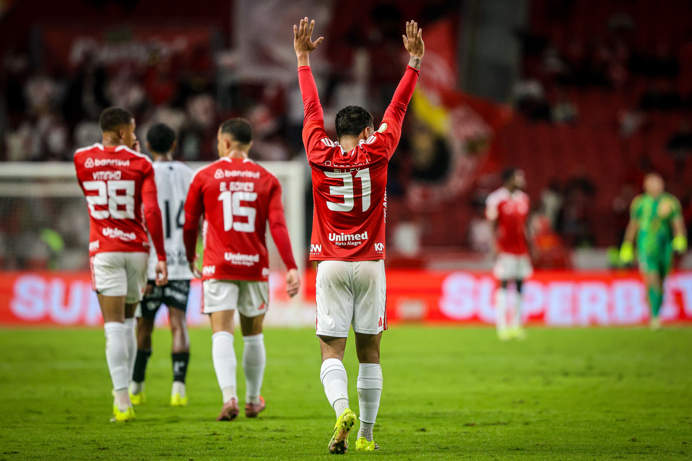
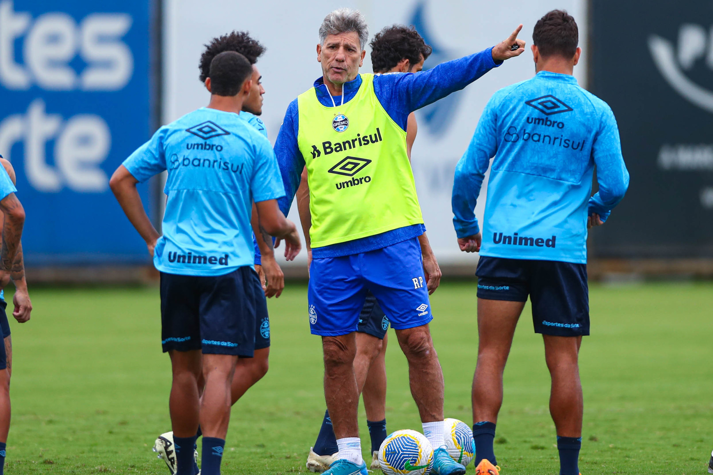
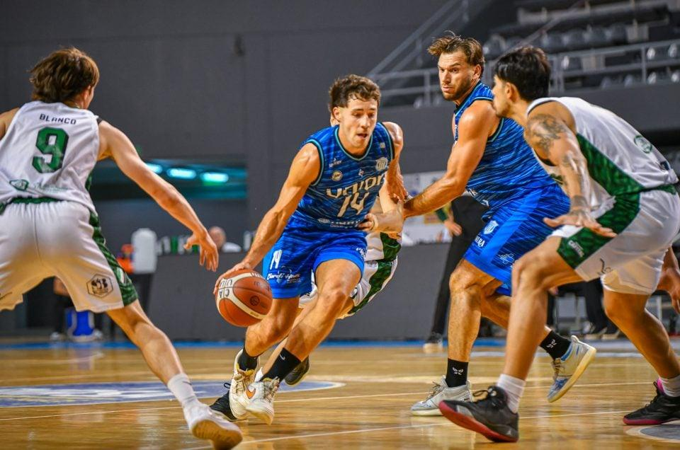
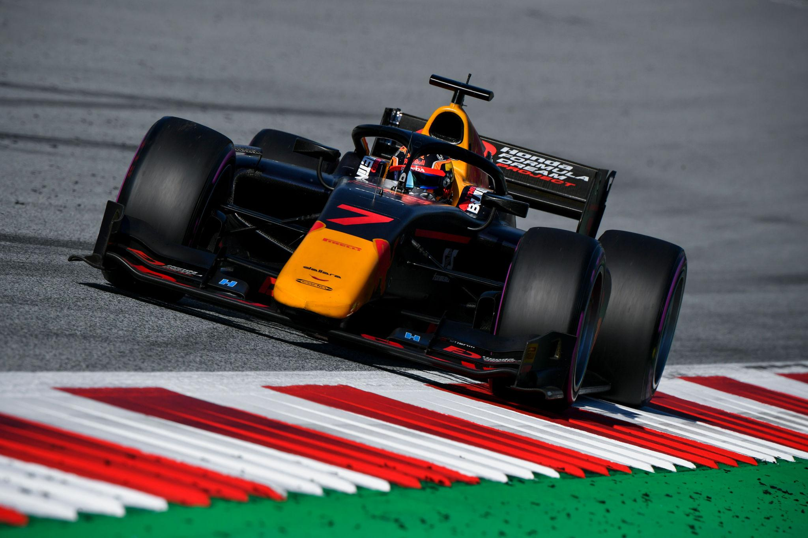

Destaque da semana

O campeonato chega a uma rodada decisiva, com equipes disputando as primeiras posições.
Confira os eventos da comunidadeEncontre atividades, serviços e notícias para participar da vida esportiva do bairro. Este portal é uma demonstração acadêmica: os conteúdos e locais são fictícios.

O campeonato chega a uma rodada decisiva, com equipes disputando as primeiras posições.
Confira os eventos da comunidadeExemplos fictícios de iniciativas gratuitas do bairro, sem inscrições reais.
Encontro de acolhimento com monitores, aos sábados, às 8h, na Praça do Movimento.
Bolas e coletes para atividades coletivas no Centro Comunitário, aos sábados, das 9h às 12h.
Exibindo todas as notícias.

A equipe conquistou três gols após uma partida equilibrada contra o Grêmio.
Notícia fictícia para demonstração.

Os clubes intensificam os treinamentos para os confrontos da próxima semana.
Notícia fictícia para demonstração.

As equipes chegam preparadas para um duelo marcado pela intensidade defensiva e pela disputa por cada posse de bola. O aproveitamento nos arremessos pode ser decisivo para definir o resultado.
Notícia fictícia para demonstração.

A escolha dos pneus, o momento das paradas nos boxes e o gerenciamento do desgaste serão fatores importantes. Uma decisão estratégica pode mudar a posição dos pilotos
Notícia fictícia para demonstração.
Calendário fictício para demonstração.
| Posição | Equipe | Pontos |
|---|---|---|
| 1º | Internacional | 18 |
| 2º | Grêmio | 15 |
| 3º | Fluminense | 12 |
Tem uma sugestão de atividade ou quer saber mais sobre os serviços?
Acesse a página de contato